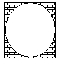

Q. In the figure below, the circle is inscribed in the square. If the area of the circle is 1.21π square feet, what is the area of the shaded region?

Since the area of the circle is 1.21π, we get
πr2 = 1.21π
Dividing by π yields
r2 = 1.21
Taking the square root of both sides gives
r = 1.1
So the diameter of the circle is
d = 2r = 2(1.1) = 2.2
Hence, a side of the square has length 2.2, and the area of the square is
(2.2)2 = 4.84
Therefore, the area of the shaded region is
4.84 – 1.21π
The answer is B.